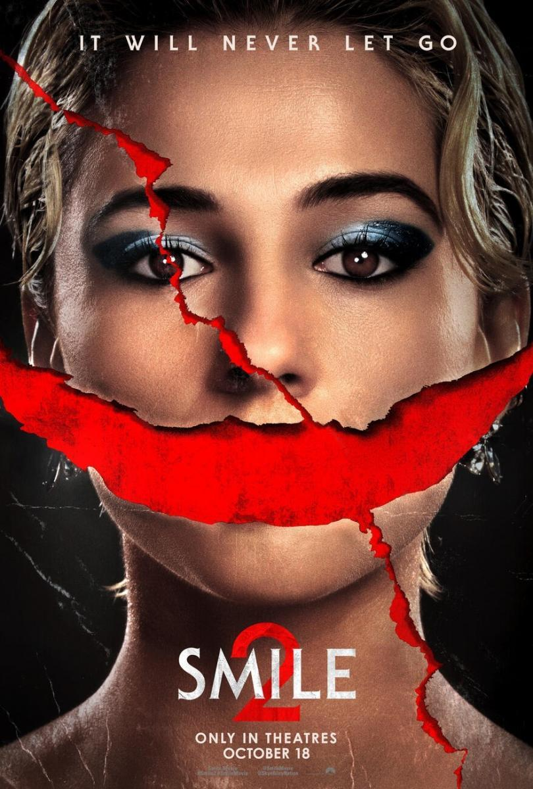

Inicio
Smile 2 es una pelicula de terror psicologico, trata de una fuerza que sigue a sus victimas con una sorisa, con una atmosfera continuamente tensa.
Sobre la pelicula
Sinopsis
Despues de los eventos de la primera pelicula, la entidad vuelve a perseguir a otra victimas, la protagonista tendra que buscar una manera de entender y romper la maldicion antes de que sea tarde.
Locaciones
Smile 2 fue grabada en una combinacion de locaciones reales y estudios, algunas escenas de ciudad fueron filmadas en Nueva York, pero las escenas de horror fueron creadas en estudios de sonido en Los Angeles.
Detalles de produccion
Director: Parker Finn
Guionistas: Parker Finn
Productores: Temple Hill Entertainment y Paramount Pictures
Opinion personal:
Pocas veces me encuentro con una secuela de una pelicula de terror que logre superar a su primera version, pero esta lo logro!, aunque no soy muy fan del final honestamente.